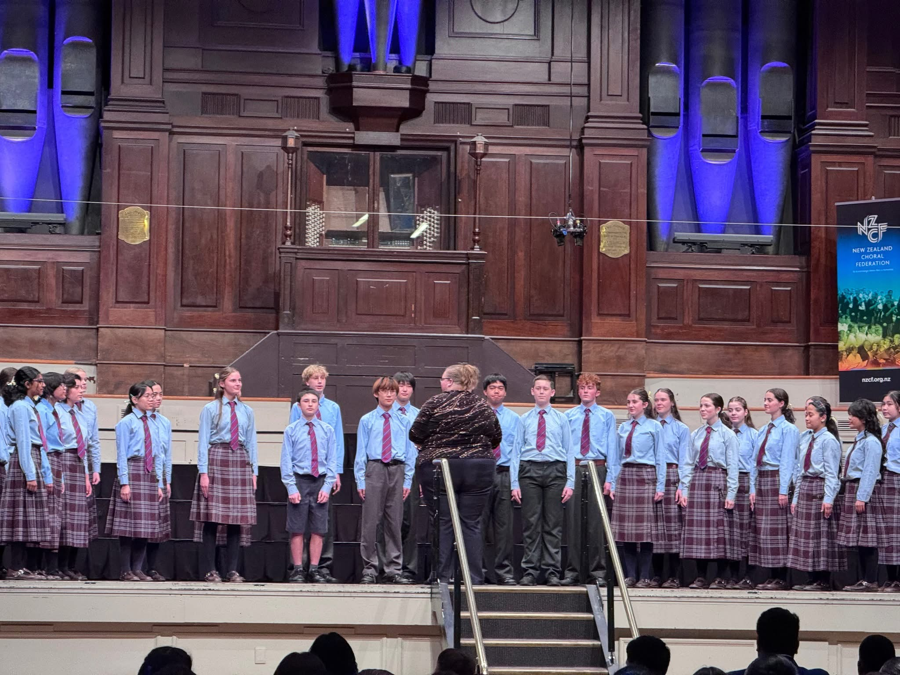
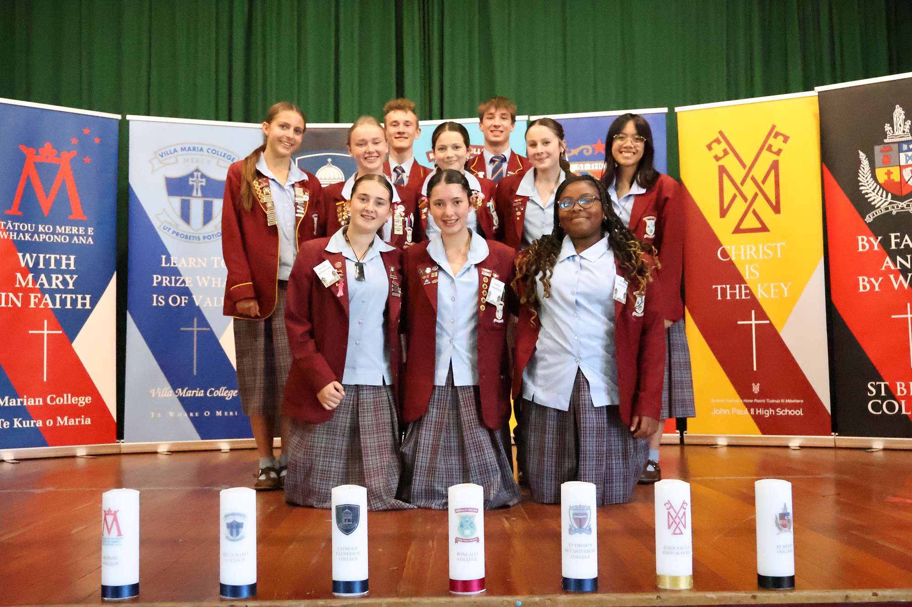
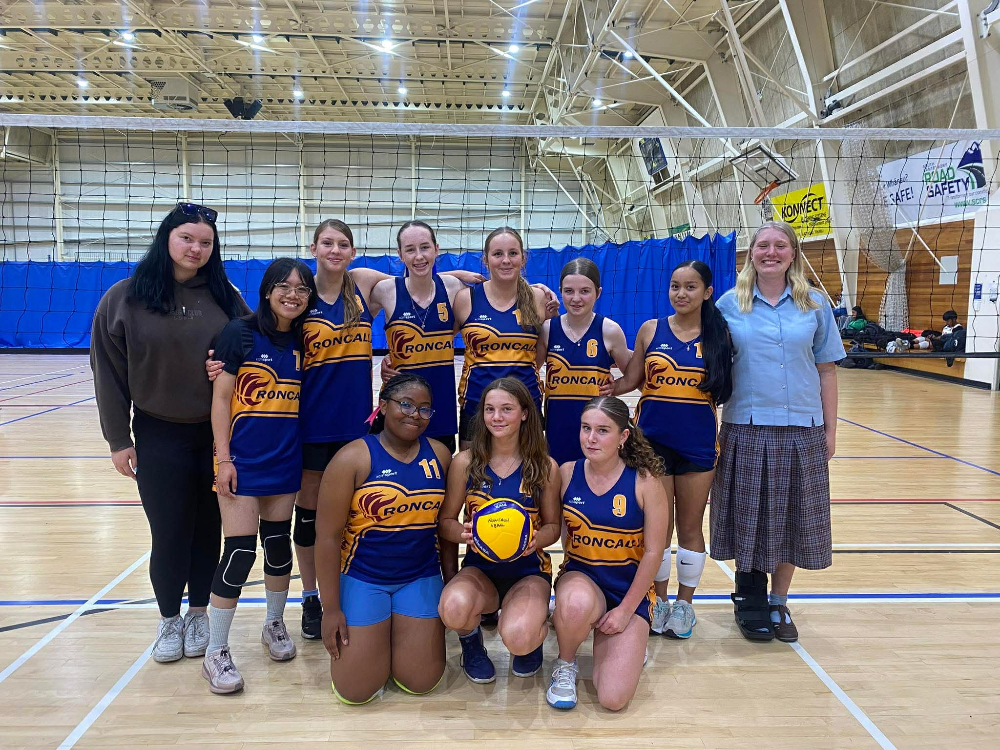
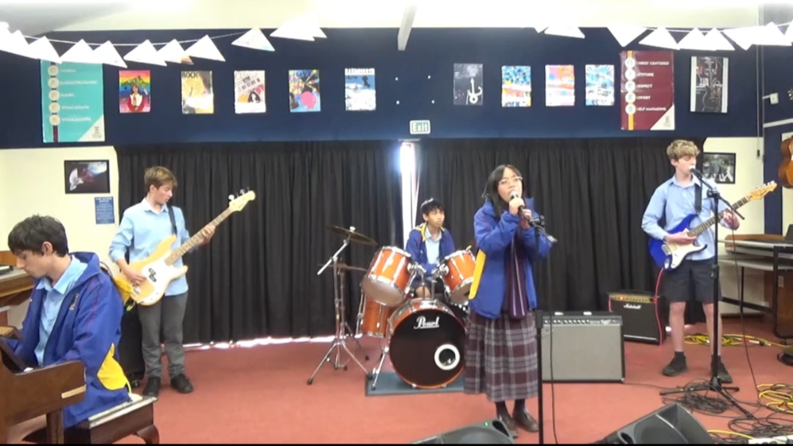
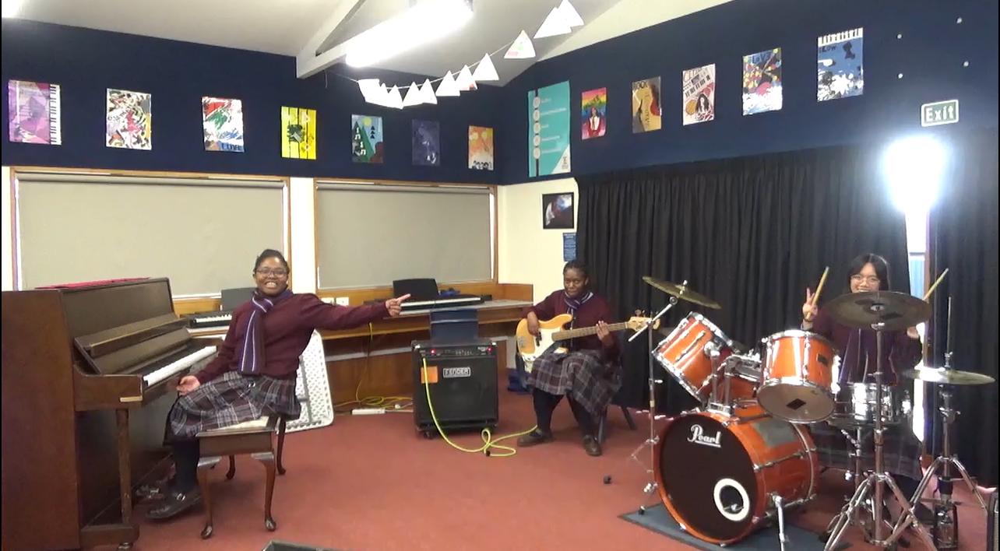
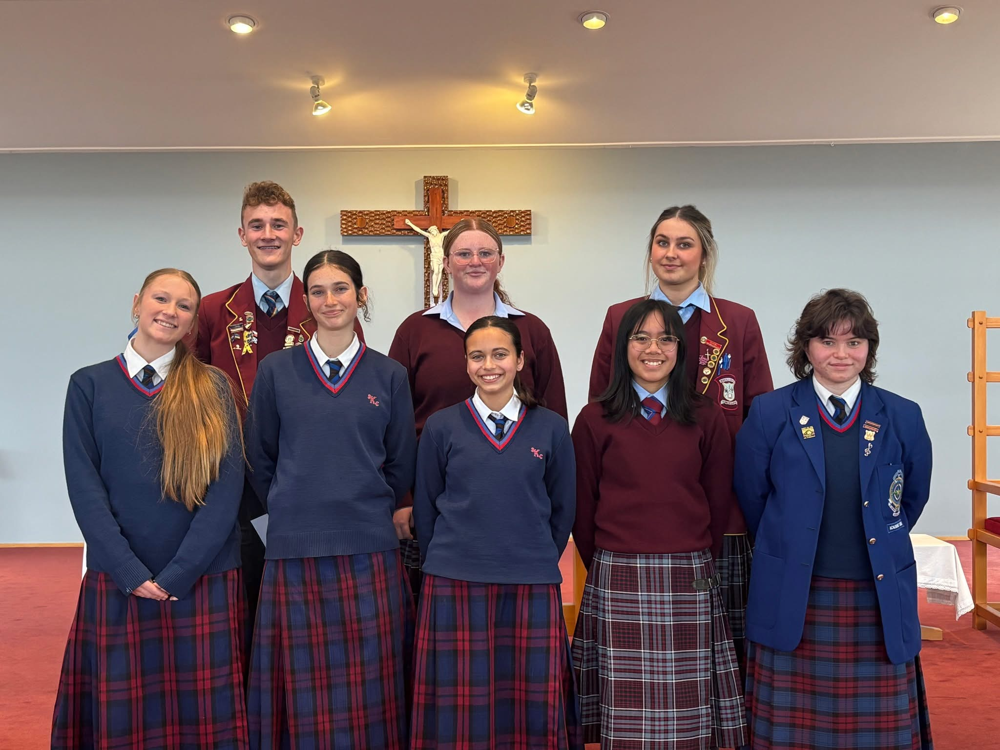
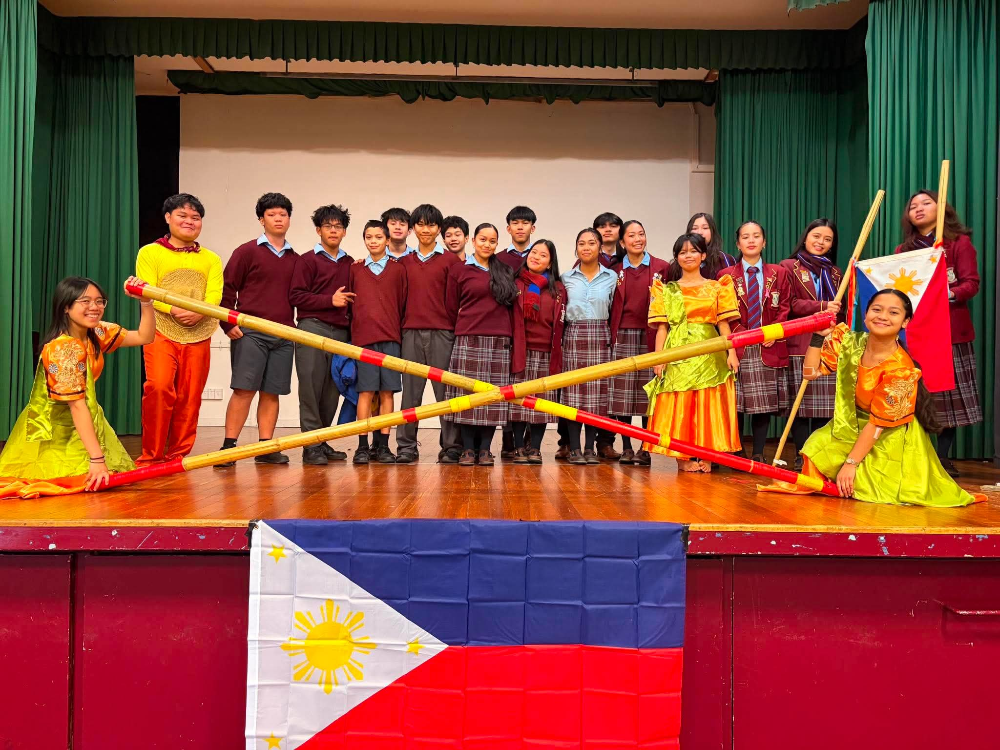

What have I been up to at Roncalli?
Besides the usual day-to-day activities in Year 10, I've been busying myself with a range of extra-curriculars. I'm part of the Roncalli Choir, which went to Dunedin in Term 2 of 2026 for the Big Sing. I am also in the Roncalli Vocal Ensemble, and I do debate with a handful of Year 11s alongside a few juniors. Right now I'm looking at taking Science and Music in Year 11, and perhaps either SPD or DTC.







